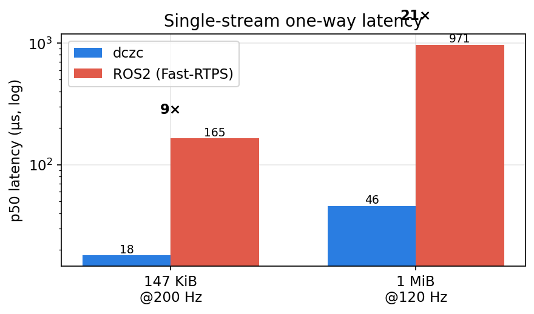
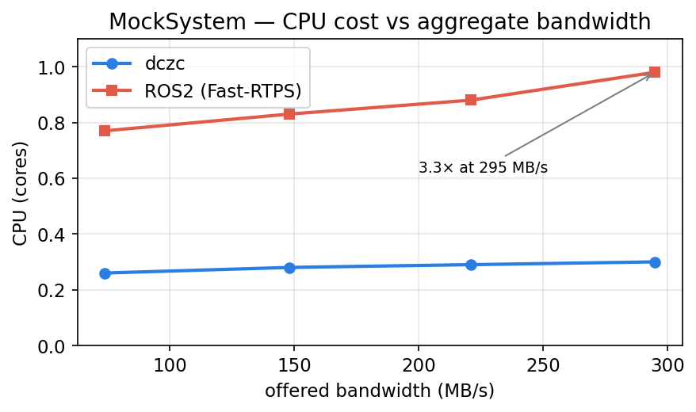
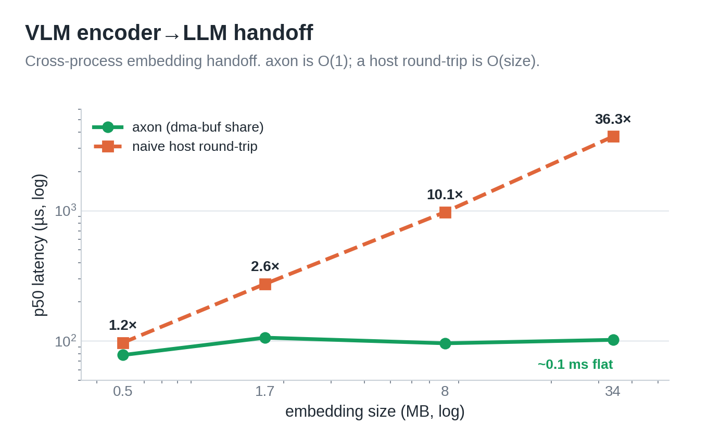

01Problem
Physical AI on a robot needs high bandwidth, low latency and real-time determinism at the same time, along the path from sensors to accelerators to the control loop. Standard middleware (ROS 2 + DDS) copies each tensor several times per frame, so latency and CPU grow with payload size, exactly where robots move the most bytes: high-resolution cameras, point clouds and image embeddings.
Middleware such as iceoryx2 already delivers messages zero-copy into RAM, but moving that data onto a GPU or NPU usually costs another copy, and the control loop has no bound on how stale its input is.
02Approach
Leave the payload where it is and pass a reference. The tensor stays in a shared dma-buf or GPU allocation that every process and accelerator reads in place. Only a fixed-size descriptor of 256 bytes or less crosses the queue.
FD plane
dma-buf file descriptors travel once through an SCM_RIGHTS / pidfd_getfd
sidecar. A buffer exported by V4L2 capture is imported directly by the accelerator driver, with no host copy.
Time plane
Inference runs in a non-RT worker; the 1 kHz control loop reads results through a seqlock as a zero-copy view. Staleness has an explicit seven-term bound, so it can be used in safety analysis.
03Measured results
RTX 5080 / Ryzen 9800X3D, compared with ROS 2 Jazzy / Fast DDS unless noted.
lower GPU→GPU latency across processes at 1–4 MiB (24–26 µs vs 162–484 µs, copy-out consumer)
less CPU for one producer and 8 subscribers at 1 MiB on the GPU (0.021 vs 0.26 cores)
page faults per frame in the RT loop; 200/200 GPU frames shared zero-copy across processes
| Comparison | Result |
|---|---|
GPU→GPU vs GPU-sharing ROS 2 transports (rosidl::Buffer CUDA, ros2_cuda_ipc), with CUDA MPS | ~2× lower at 1 MiB |
| Host→host 1 MiB vs ROS 2 loaned messages + data-sharing | 2.4× lower (15 vs 36 µs) |
| Multi-stream robot workload at 297 MB/s | camera p50 29 vs 44 µs, half the CPU |
| VLM encoder → LLM handoff (34 MB video) | 36× faster than a host round-trip |
| Real camera → CUDA inference on Jetson AGX Xavier | no user-space copy; 5.5 ms end to end (USB 3 camera) |
| Host→host vs iceoryx2, 64 B – 64 MiB | about the same up to 4 MiB; slower from 16 MiB with a 4-buffer ring |



04Honest scope
- Pre-alpha and single-host. NVIDIA Isaac ROS, DeepStream and Holoscan are production-grade, span nodes and carry far more features.
- The host-only path is not where axon wins: it matches iceoryx2 up to 4 MiB and is slower for large frames with a deep ring.
- Without CUDA MPS, a consumer that launches GPU kernels pays the GPU context switch with any transport.
Pick axon for one framework-neutral zero-copy transport on a single host with a real-time consumer that wants the freshest sample. Every claim and its conditions are listed in the claims audit.
05API at a glance
// Producer (non-RT)
auto pool = axon::TensorPool::create({.n_buffers = 32, .buffer_size = 4 << 20});
auto pub = axon::TensorPublisher::create("camera/inference_out", *pool);
pub->handshake_pool(); // SCM_RIGHTS, once
auto a = pub->acquire_descriptor(); // write the frame into a.host_view
pub->publish(std::move(a));
// Consumer (RT 1 kHz loop)
auto sub = axon::TensorSubscriber::create("camera/inference_out");
axon::rt_setup_memory_and_sched(); // mlockall + prefault + SCHED_FIFO
if (auto v = sub->latest_view(8)) process(v->data, v->shape, v->staleness_ns);Runnable C++, Python and GPU examples are in docs/usage.md; ROS 1 / ROS 2 integration and a cross-process GPU accelerator pool are included.